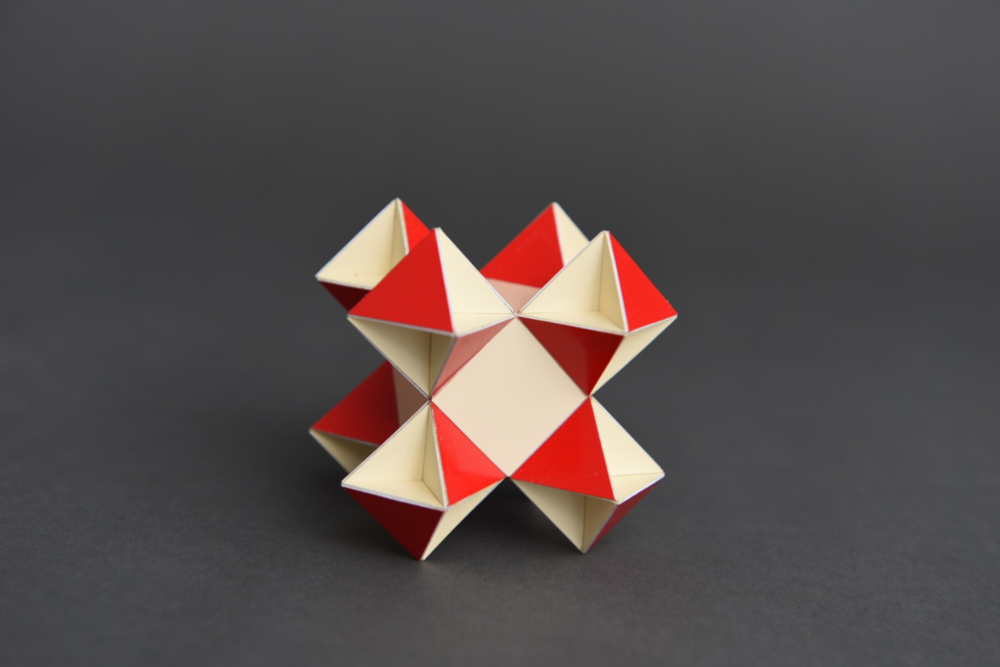

Deflated Swissohedron

This is a variant of the Swissohedron with the crosses a bit closer to the centre of the polyhedron. See more about corossohedra here.
Depending whether you interprete the crosses that consist of 5 squares as concave equilateral dodecagons or as 2 intersecting rectangles with a ratio of 1:3, this polyhedron either consists of 12 crosses and 32 congruent equilateral triangles or of 12 crosses, 8 small equilateral triangles and 8 bigger equilateral triangles. In case of the latter this polyhedron is isogonal. One can also see this polyhedron as an octahedron with a tetrahemihexahedron attached to each triangle.
The model was built in 2021 and the smallest edge length is 2.5 cm (1 inch). The diameter is around 8.5 cm (3.3 inch).
Links
Last Updated
2021-04-13